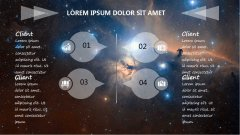

Nicepal News 新闻中心
-
智能皮带机控制器 数据采集器 2017-11-17 [新闻中心] 基于物联网的嵌入式综合智能测控终端”是威盛电气公司与中科院“智能控制与感智云技术联合实验室”联合研制的一款基于物联网概念的智慧型智能测控终端，是威盛公司的专利产品。智能皮...
查看详情 -
污水处理行业专用综合智能测控终端 2017-11-17 [新闻中心] 污水处理行业专用综合智能测控终端 厂家直销综合智能控制终端产品概述： “基于物联网的嵌入式综合智能测控终端”是威盛电气公司与中科院“智能控制与感智云技术联合实验室”联合研制...
查看详情 -
把控制系统植入铁路系统后，发生了一些惊人变 2017-11-17 [新闻中心] 轨道交通的运营和安全 瑞士金色山口（GoldenPass line）列车于8点45分从日内瓦湖边的蒙特勒（Montreux）出发。在接下来的两个半小时中，列车将经过多个山口和峡谷，穿越瑞士风光最为秀丽和引...
查看详情 -
 物联网井喷在即 看全球芯片巨头的布局 2017-11-17 [新闻中心] 物联网被业内公认为是继计算机、互联网之后世界产业技术革命的第三次高潮，孕育着史无前例的大市场。在物联网的带动下，芯片产业也将获得蓬勃发展。万物联网芯片正成为超过PC、手机芯...
查看详情